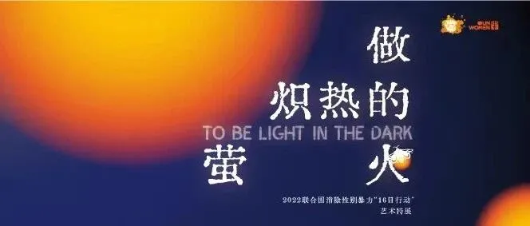
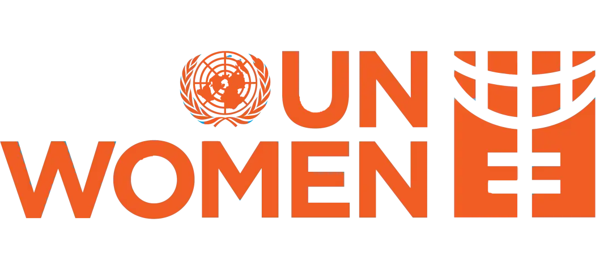
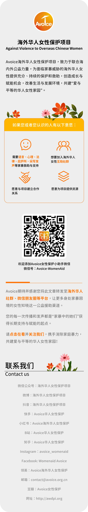

全球范围内，平均每3名妇女，就有一人曾经历过基于性别的暴力。在现实生活中，幸存者为了摆脱性别暴力阴影需要无畏前行的勇气；行动者搭建的支持方案需要周全的现实智慧。
2022年的“消除性别暴力16日行动”， 联合国妇女署推出“做炽热的萤火”艺术特展，邀请大家走进展览，用艺术的角度更深刻与全面地体会幸存者与行动者的生命故事。预约观展详情请参考展览海报。（*入馆参观请佩戴口罩、配合体温测量与北京市疫情防控工作实时要求）



News and stories6 December 2022


全球范围内，平均每3名妇女，就有一人曾经历过基于性别的暴力。在现实生活中，幸存者为了摆脱性别暴力阴影需要无畏前行的勇气；行动者搭建的支持方案需要周全的现实智慧。
2022年的“消除性别暴力16日行动”， 联合国妇女署推出“做炽热的萤火”艺术特展，邀请大家走进展览，用艺术的角度更深刻与全面地体会幸存者与行动者的生命故事。预约观展详情请参考展览海报。（*入馆参观请佩戴口罩、配合体温测量与北京市疫情防控工作实时要求）
